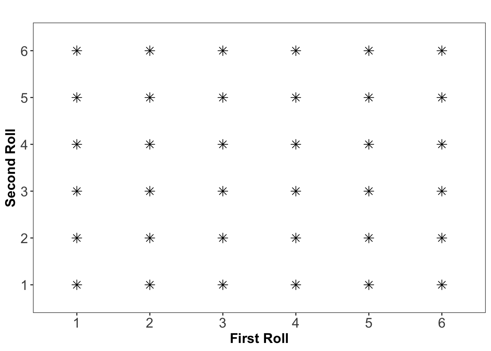

9 What is Probability?
Now that we have explored fundamental probability concepts, such as unions, intersections, complements, and mutually exclusive events, we can use these ideas to formally define probability itself.
Using the relationships between events that we have discussed, we can also establish the formal rules of probability and see how these concepts help in calculating probabilities for different types of events.
9.1 Fundamental Assumptions of Probability
Probability theory provides a framework for modeling randomness and quantifying uncertainty. At its core, it relies on three fundamental assumptions that define how probabilities are assigned to different outcomes in a random experiment.
First, every probability calculation begins with a random experiment that has a well-defined sample space, denoted as \(\Omega = \{O_1, O_2, \dots, O_n\}\). This sample space represents all possible outcomes of the experiment, ensuring that every event of interest is accounted for.
Second, once the sample space is established, each outcome \(O_i\) is assigned a probability \(P(O_i)\) for \(i = 1,2,\ldots, n\), representing the likelihood of that specific event occurring. These probabilities must follow
-
non-negativity, meaning that probabilities must always fall within the range \(0 \leq P(O_i) \leq 1\) for all outcomes. This ensures that an event can never have a negative probability, and the probability of a certain event is at most 1.
- and the total probability principle, stating that the sum of all assigned probabilities must equal 1:
\[P(O_1) + P(O_2) + \dots + P(O_n) = \sum_{i=1}^{n} P(O_i) = 1\]
These fundamental principles form the backbone of probability theory, ensuring a structured and consistent way to reason about uncertain events. By defining probabilities within these constraints, we can build models that capture real-world randomness and variability in a mathematically rigorous way.
The probability of an event \(A\), denoted as \(P(A)\), is determined by summing the probabilities of all individual outcomes that make up \(A\): \[ P(A) = \sum_{O_i \in A} P(O_i) \]
This rule ensures that if an event consists of multiple possible outcomes, its probability is found by adding up the probabilities of each contributing outcome.
Since probability values must be assigned consistently, we require a formal system that ensures logical coherence in probability calculations. This leads us to Kolmogorov axioms, which form the foundation of modern probability theory.
9.2 Kolmogorov’s Axioms
To maintain consistency in probability assignments, Andrey Kolmogorov formulated three fundamental axioms:
Non-Negativity: The probability of any event \(A\) is always greater than or equal to zero:
\[P(A) \geq 0\]
This ensures that probabilities are never negative.Total Probability: The probability of the entire sample space \(\Omega\) (i.e., the event that some outcome must occur) is exactly 1:
\[P(\Omega) = 1\]
This guarantees that probability is correctly distributed among all possible outcomes.Additivity for Mutually Exclusive Events: If two events \(A\) and \(B\) cannot occur at the same time (i.e., they are mutually exclusive), then the probability of either occurring is the sum of their individual probabilities:
\[P(A \cup B) = P(A) + P(B)\]
This principle extends to any finite or countable number of mutually exclusive events. If \(A_1, A_2, \dots, A_k\) are pairwise disjoint events, then the probability of their union is the sum of their individual probabilities: \[P(A_1 \cup A_2 \cup \dots \cup A_k) = P(A_1) + P(A_2) + \dots + P(A_k)\]
These axioms are not just abstract rules; they provide the backbone for all probability calculations, from simple games of chance to risk assessments in finance, medicine, and machine learning. By defining probability through outcome summation and enforcing consistency through these axioms, we build a powerful and reliable framework for understanding and modeling uncertainty, thus allowing for meaningful calculations and predictions about uncertain events.
9.3 Defining Probability
The probability of an event \(A\), denoted as \(P(A)\), is a measure of how likely it is that the event will occur. Different interpretations of probability exist, leading to various probability definitions.
9.3.1 The Classical Definition
The classical definition of probability, derived from basic counting principles, states that if a random experiment has \(N\) possible outcomes, and exactly \(N_A\) of these correspond to event \(A\) occurring, then the probability of \(A\) is given by: \[P(A) = \frac{N_A}{N}\] This is known as a theoretical probability assignment, as it assumes that all outcomes are equally likely.
9.3.2 The Frequentist Definition
An alternative way to define probability is through relative frequency. In the frequentist interpretation, the probability of an event \(A\) is understood as the proportion of times \(A\) occurs in a very long sequence of repeated random experiments. This can be expressed mathematically as: \[P(A) \approx \frac{n_A}{n}\] where:
- \(n_A\) is the number of times event \(A\) occurs.
- \(n\) is the total number of trials.
As the number of trials \(n\) increases, the relative frequency of event \(A\) stabilizes and approaches its probability \(P(A)\), aligning with the classical probability definition. In other words, if we repeat an experiment an extremely large number of times, the empirical probability we observe will converge toward a fixed value. This phenomenon is known as the stability of relative frequencies and serves as the empirical foundation of probability theory. It explains why probabilities can be estimated by repeated experimentation, as observed frequencies tend to settle around a fixed value over a large number of trials. AN example of this is shown below in Example 9.1.
This probability defintion is known as the empirical probability assignment, meaning that probabilities are assigned based on observed data rather than theoretical assumptions.
9.3.3 The Subjective Definition
Another way to interpret probability is through subjective probability, where probability is understood as a*measure of personal belief in the occurrence of an event. Formally, the probability of an event \(A\) in this interpretation is given by:
\[P(A) = \text{a measure of how strongly a person believes that } A \text{ will occur}\] For example, one might estimate the probability of rain tomorrow as 30%, or believe that the chance of Germany winning the next Eurovision Song Contest is 70%. These probabilities are not derived from mathematical models or repeated experiments but instead reflect an individual’s degree of confidence in a given outcome.
This approach known as the subjective probability assignment is commonly used in decision-making under uncertainty, such as betting, economics, and risk assessment, where probabilities are assigned based on available information, intuition, or expert judgment rather than empirical frequency or formal statistical models.
Example 9.1: Stability of Relative Frequencies
How many sixes can we expect if we roll a die 10 times? 1000 times? 10,000 times?
Let event \(A\) represent rolling a six when tossing a fair die. The theoretical probability of rolling a six is:
\[P(A) = \frac{1}{6} \approx 0.167\]
This suggests that in 10 rolls, we should expect approximately 1 to 2 sixes.
To illustrate this, nine people each rolled a die 10 times, producing the following results for the number of sixes obtained: \(1, 3, 1, 2, 2, 5, 4, 0, 2\)
In total, there were 90 rolls, with a total of: \(1+3+1+2+2+5+4+0+2 = 20\) occurrences of a six. The relative frequency of rolling a six in this experiment was: \[\frac{n_A}{n} = \frac{20}{90} = 0.22\]
What happens if we roll the die many more times? Using a computer simulation, the die was rolled 1000, 10 000 and 100 000 times, resulting in 140, 1726, and 16 745 sixes. The results are summarized in Table 9.1.
| Number of 🎲 Rolls | Number of Sixes | Relative Frequency |
|---|---|---|
| 10 | 2 | 0.20 (20%) |
| 90 | 20 | 0.22 (22%) |
| 1,000 | 140 | 0.14 (14%) |
| 10,000 | 1,726 | 0.173 (17.3%) |
| 100,000 | 16,745 | 0.167 (16.75%) |
As the number of trials increases, the observed relative frequency tends to stabilize around the theoretical probability. This illustrates the law of large numbers, which states that the empirical probability of an event converges to its theoretical probability as the number of trials increases. We’ll return to this later on.
9.4 Uniform Probabilitis
In many practical situations, it is reasonable to assume that all outcomes of a random experiment are equally likely. This is known as a uniform probability model.
For an experiment where each outcome occurs with equal probability, the probability of an event \(A\) can be calculated as:
\[P(A) = \frac{N_A}{N}\]
where:
- \(N\) is the total number of possible outcomes.
- \(N_A\) is the number of favorable outcomes (i.e., outcomes where event \(A\) occurs).
This applies to all situations where each outcome has the same probability of occurring.
Example 9.2: Rolling Two Dice 🎲🎲
Consider rolling two fair six-sided dice. Since each die has six faces, there are a total of:
\[6 \times 6 = 36\]
possible outcomes, all of which are assumed to be equally likely. This is illustrated below where each star represents a possible combination of each roll of the two dice:
What is the probability of rolling two sixes?
Solution
Define event \(A\) as the event of rolling a six on both dice. Since there is only one way to get this outcome \((6,6)\) among the 36 possible outcomes, the probability of \(A\) is: \[P(A) = \frac{1}{36} \]
Thus, the likelihood of rolling double sixes in a single roll is 1 in 36, or approximately 2.78%.
Below in Table 9.2, all possible outcome combinations and their corresponding probaiblitis are given. The probability of rolling double sixes in a single roll is given the last row of this table.
| Sum | Number of Outcomes | Probability |
|---|---|---|
| 2 | 1 | 1/36 (2.78%) |
| 3 | 2 | 2/36 (5.56%) |
| 4 | 3 | 3/36 (8.33%) |
| 5 | 4 | 4/36 (11.11%) |
| 6 | 5 | 5/36 (13.89%) |
| 7 | 6 | 6/36 (16.67%) |
| 8 | 5 | 5/36 (13.89%) |
| 9 | 4 | 4/36 (11.11%) |
| 10 | 3 | 3/36 (8.33%) |
| 11 | 2 | 2/36 (5.56%) |
| 12 | 1 | 1/36 (2.78%) |
Exercises
- Consider rolling two fair six-sided dice. What is the probability of rolling doubles (both dice show the same number)?
Solution
From earlier we know that the dice rolling follows a uniform probability model with \(6 \times 6 = 36\) total possible outcomes.
The event ‘Doubles’ occur when both dice show the same number:
(1,1), (2,2), (3,3), (4,4), (5,5), (6,6), implying we have 6 outcomes of interest and the probability of this event is given by \[P(\text{doubles}) = \frac{6}{36} = \frac{1}{6} \approx 0.167 \text{ (16.7\%)} \]